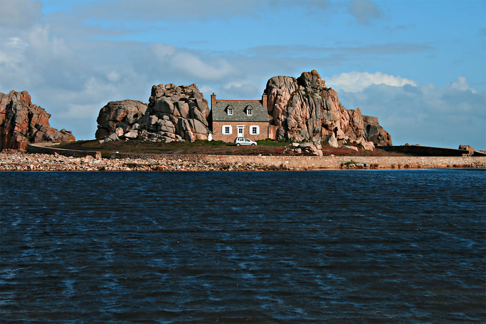

Nos produits


Notre Projet :
Le Poisson Ikejime
L'ikajime est une technique d'abattage du poisson consistant à neutraliser le système nerveux de l'animal vivant avant de le saigner. Cette pratique ancestrale, d'origine japonaise, a pour effet de réduire le stress et la douleur du poisson. Ses muscles ne sont pas aussi contractés, sa chair se conserve mieux et ses qualités gustatives sont supérieures, par rapport à la manière habituelle, par asphyxie